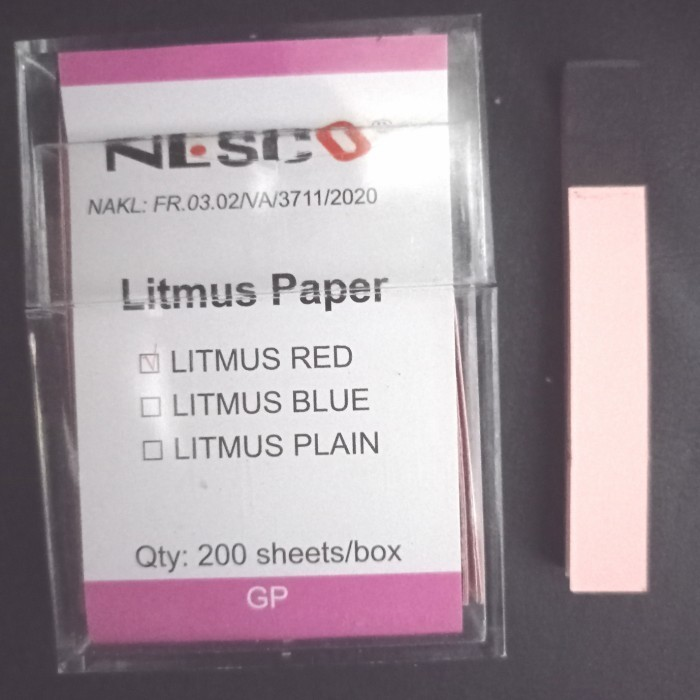
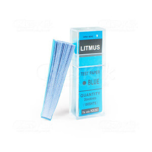
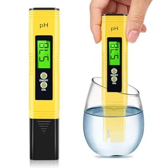
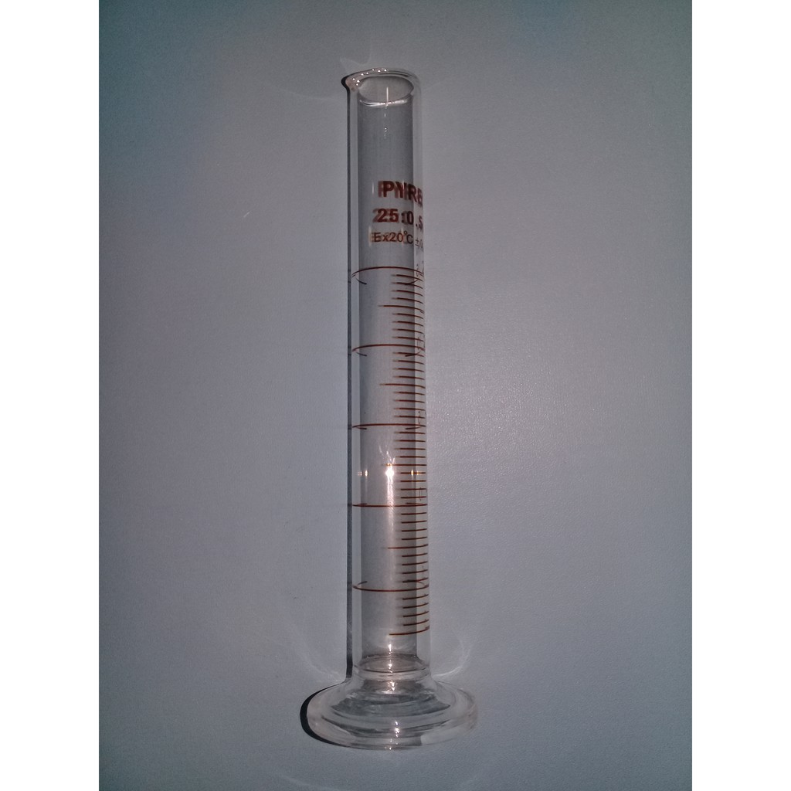
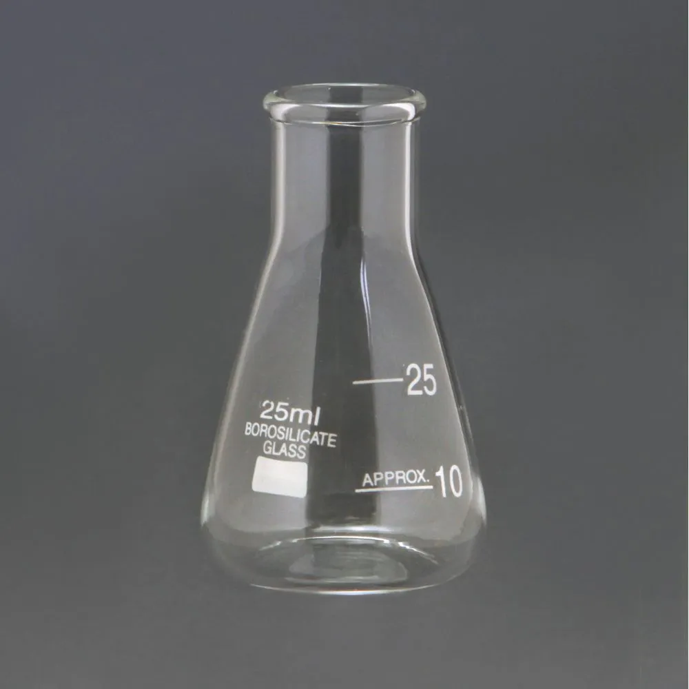
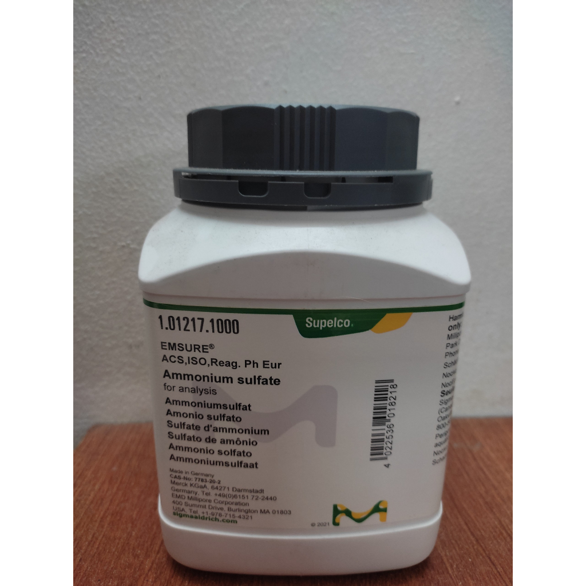
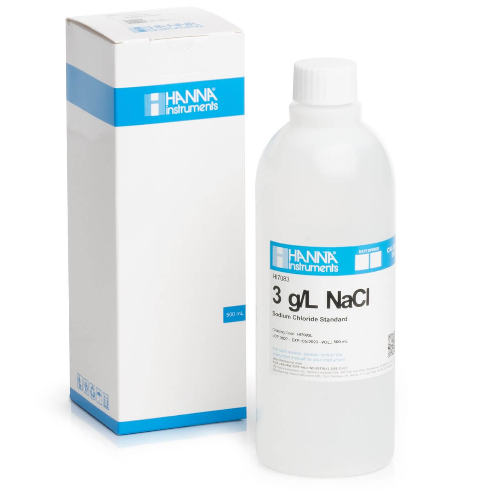
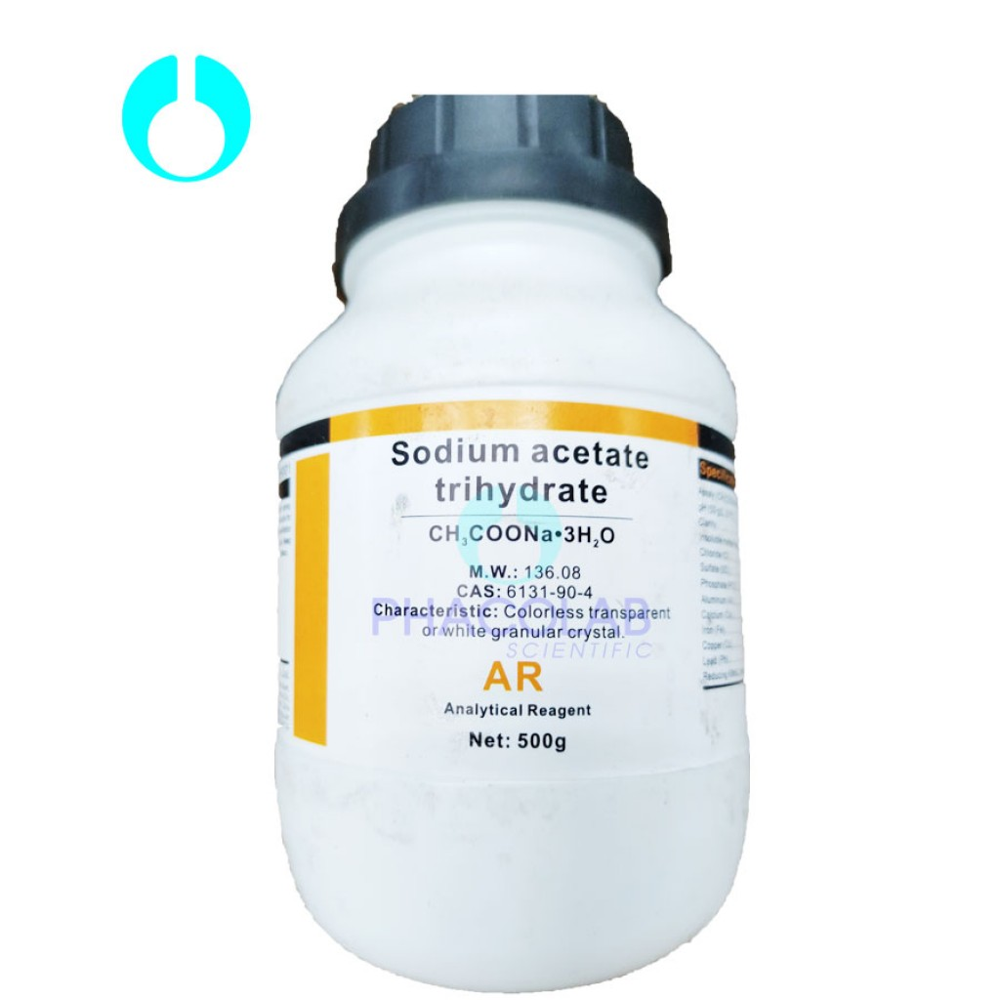
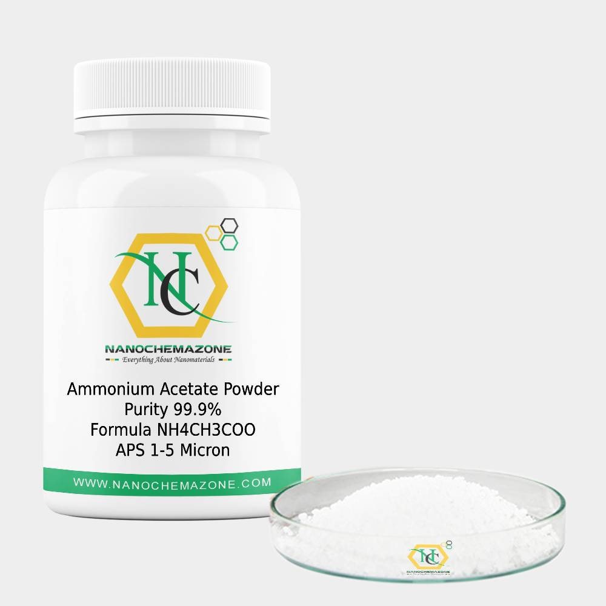
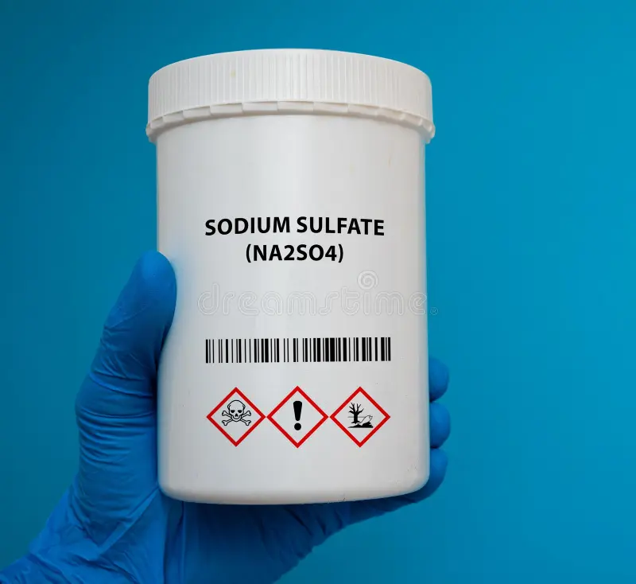

UNIVERSITAS NEGERI MALANG
Laboratorium Virtual Hidrolisis Garam

Kertas Lakmus Merah

Kertas Lakmus Biru

pH Meter

Gelas Ukur 25 mL

Erlenmeyer 25 mL

(NH4)2SO4

NaCl

CH3COONa

NH4CH3COO

Na2SO4